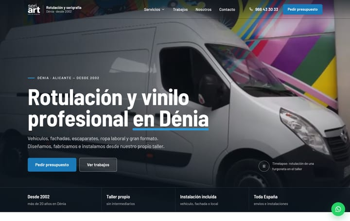
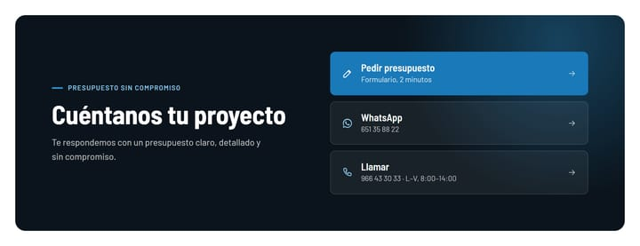

Seriart
La web de un taller de rotulación que su dueño actualiza sin tener que llamar a nadie.
Publicada en versión provisional mientras se preparan el dominio propio y las fotos de los trabajos del taller.
- Negocio
- Taller de rotulación, vinilo y serigrafía en Dénia
- Acción principal
- Pedir presupuesto
- Qué incluye
- Web de servicios, trabajos y taller, panel de edición y publicación automática
- Estado
- Publicada · ver la web

El punto de partida
Seriart diseña, fabrica e instala rotulación en Dénia desde 2002: furgonetas, fachadas, escaparates, ropa laboral y gran formato.
Cada semana sale del taller un trabajo nuevo, y ahí estaba el reto. En el equipo no hay nadie técnico, y una web que depende de otra persona para cambiar una foto acaba abandonada.
Así que el encargo tenía dos partes: una web que dejara claro qué hace el taller y cómo pedir presupuesto, y una forma de mantenerla que el dueño pudiera usar solo.
Lo que decidimos al estudiar el negocio
- Es un taller de rotulación, no una imprenta. Una primera dirección visual con papel, tinta y marcas de registro se descartó: transmitía imprenta, y lo que Seriart vende es vinilo sobre furgonetas y fachadas.
- La mejor prueba es el propio trabajo. El taller tenía un vídeo en cámara rápida rotulando una furgoneta. Va en la portada, en lugar de cualquier foto de catálogo.
- Cada cliente pide presupuesto a su manera. Hay quien prefiere un formulario, quien escribe por WhatsApp y quien llama. Las tres vías tienen el mismo peso.
- Las fotos de los trabajos, pendientes. Mientras el taller prepara las suyas, la web usa fotos con licencia libre y sus créditos, que el dueño sustituye desde el panel cuando quiera.
Cómo la mantiene el taller
El dueño edita la web desde un panel sencillo, en el ordenador o en el móvil. No necesita saber nada de código ni tener cuentas técnicas: entra con un enlace que le llega por correo.
- Entra en el paneldesde el móvil o el ordenador
- Cambia un texto o sube fotosde un trabajo nuevo, o el vídeo de portada
- Guardalas fotos se optimizan solas en tres tamaños
- La web se publica solaen uno o dos minutos
Decisiones, una a una

El taller, en movimiento
El vídeo se puede pausar. Si el visitante tiene activado «reducir movimiento» en su dispositivo, ve una imagen fija.
Qué y dónde, a la primera
«Rotulación y vinilo profesional en Dénia»: las palabras con las que la gente lo busca, en el titular.
Un botón que manda
«Pedir presupuesto» es el único botón relleno. «Ver trabajos» queda en segundo plano.
Cuatro razones, sin adornos
Desde 2002, taller propio, instalación incluida y envíos a toda España. Datos del negocio, no eslóganes.
WhatsApp siempre a mano
Para quien prefiere mandar una foto de su furgoneta antes que rellenar un formulario.

«Formulario, 2 minutos»
Decir cuánto se tarda quita la pereza de empezar. Los mensajes llegan directamente al correo del taller.
El número, a la vista
WhatsApp con el número escrito, por si alguien prefiere guardarlo.
Teléfono con horario
De lunes a viernes, de 8:00 a 14:00, junto al número. Nadie debería llamar a las cinco y encontrarse cerrado.
En el móvil

Presupuesto en la cabecera
En el móvil, el botón vive arriba, junto al menú: no hay que bajar hasta el final para encontrarlo.
Botones a todo el ancho
Fáciles de pulsar con una mano, sin apuntar.
Texto legible sobre vídeo
Un velo oscuro mantiene el contraste del titular sea cual sea el fotograma.
Lo que falta
- Las fotos de los trabajos del propio taller, que irán sustituyendo a las provisionales desde el panel.
- El dominio propio. Mientras tanto, la web está publicada en una dirección provisional.
Las capturas de esta página no muestran las fotos provisionales con licencia libre: el fondo de la portada es un fotograma del vídeo del propio taller.
¿Quieres poder cambiar tu web sin depender de nadie?
Cuéntame tu negocio y cómo trabajas. Si tiene sentido que la actualices tú, la preparo para eso.
Cuéntame tu negocio